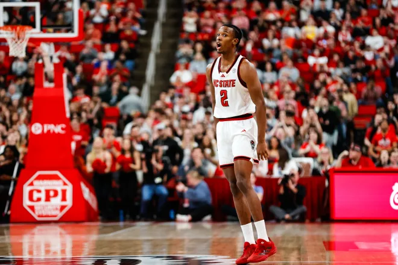

State’s Struggles Continue in Loss to Clemson
NC State fans, this one was tough to watch. The Pack dropped another ACC matchup last night, falling to Clemson 68-58 in a game that felt out of reach from the second half onward. This marks NC State’s eighth loss in their last ten games, bringing the overall record to 9-12 and a rough 2-8 in conference play.
A Game of Missed Opportunities
The glaring stat from this one? Free throws. Or rather, the lack of them. NC State attempted just six free throws the entire game. Six. Meanwhile, Clemson capitalized at the line, getting crucial points that helped them maintain control. When you’re struggling offensively, you have to find a way to get to the line and make the opponent work defensively. NC State just didn’t do that.
Offensive Struggles
The Wolfpack’s offense was stagnant for long stretches, and it showed in the box score. Only one player managed to hit double figures, a troubling sign for a team that needs multiple contributors to be competitive. The shooting percentages weren’t abysmal, but there was no rhythm or consistency, and Clemson’s defense didn’t have to work too hard to contain NC State’s attack.
Four Factors Breakdown
Looking at the Four Factors, Clemson simply played a more efficient game. Their effective field goal percentage (eFG%) was noticeably better than NC State’s, and they dominated the turnover battle. NC State did manage to grab offensive rebounds, but without converting those into points, it didn’t matter much. Add in Clemson’s ability to draw fouls and get easy points at the line, and the result was inevitable.
Where Does NC State Go From Here?
Right now, NC State sits 16th in the ACC, and unless something drastic changes, this season is slipping away fast. The offense needs a spark—whether it’s a lineup change, a more aggressive approach to drawing fouls, or simply knocking down open shots. With just two ACC wins so far, every game from here on out becomes must-win territory if the Pack wants to salvage any postseason hopes.
The good news? The effort is there. The execution, however, is still missing. If NC State can start making trips to the free-throw line and get some offensive balance, they might be able to turn things around. But right now, it’s a tough time to be an NC State fan. NC State freshman Paul McNeil